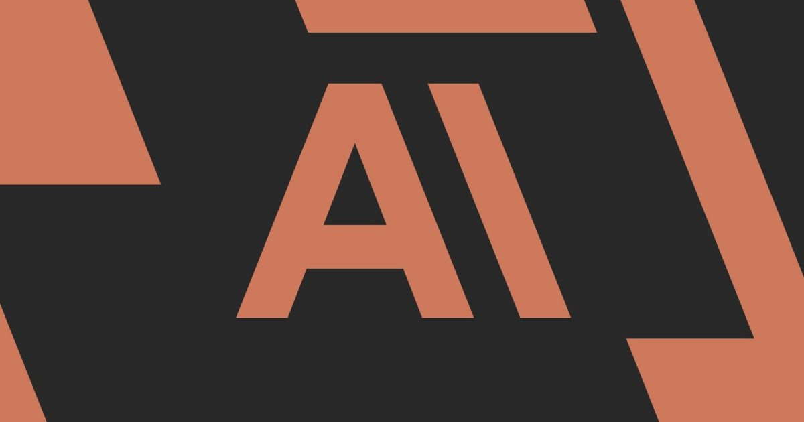

Anthropic сжигает газ, чтобы питать стрелу ИИ
По мере того, как он готовится к обнародованию, ЗАЯВКА Anthropic S-1 делает зависимость генеративного ИИ от метана очевидной.
«Конкуренция за доступ к электроснабжению и местам расположения центров обработки данных с достаточной доступностью электроэнергии является интенсивной.« В документах, поданных в Комиссию по ценным бумагам и биржам США в понедельник, Anthropic признает, что центры обработки данных становятся все более зависимыми от «природного газа» ...